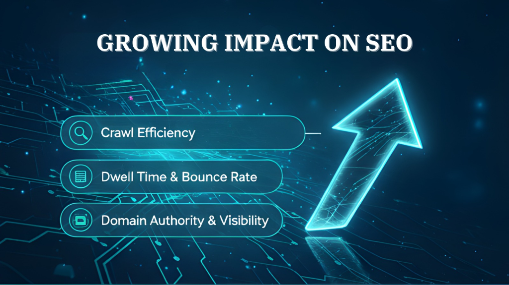

Why Is Page Speed Optimization So Important in 2026?

In 2026, website speed is no longer optional. A fast website impacts SEO performance, user experience, conversion rates, brand reputation, and long-term digital growth. Search engines prioritize fast-loading pages, users expect instant results, and businesses that ignore page speed optimization risk losing traffic & revenue.
Optimizing your website’s performance is essential for every digital business, e-commerce platform, or service website. In a world where attention spans are short and competition is fierce, every second counts.
The Growing Impact of Page Speed on SEO
Search engines now evaluate websites using Core Web Vitals and advanced performance signals. Key metrics include:
- Largest Contentful Paint (LCP) – time to load main content
- Interaction to Next Paint (INP) – responsiveness to user actions
- Cumulative Layout Shift (CLS) – page stability during load
Websites that fail to meet these metrics struggle to rank, regardless of content quality. Page speed optimization improves:
- Crawl efficiency & indexability
- Dwell time & bounce rate
- Domain authority & search visibility
Faster websites not only rank higher but also offer a better user experience.
User Experience & Engagement
Modern users expect websites to load in under 2 seconds. Even small delays increase abandonment rates, reduce engagement, and hurt brand trust. A fast website:
- Encourages visitors to explore more pages
- Improves mobile accessibility & performance
- Boosts user satisfaction & interaction
Real Success Story
“A popular influencer once ran his entire business only through Instagram, but real growth began after launching his own official website and focusing on page speed optimization. Initially, the website attracted visitors, yet slow loading times limited conversions & user engagement. After improving website speed, optimizing images, & enhancing performance, the site started ranking higher on Google & retaining more visitors. The faster website experience built customer trust & significantly increased sales. Within a short period, his revenue more than doubled compared to when he depended solely on social media. This story shows how page speed optimization directly impacts business growth, SEO performance, and online revenue”
Technical Foundations of Page Speed Optimization
Effective page speed optimization includes:
- Image compression & modern formats (WebP, AVIF)
- Minifying CSS, JS & HTML
- Caching strategies & CDN integration
- Reducing render-blocking resources
- Efficient server response times
These improvements collectively enhance website speed, SEO rankings, & user satisfaction.
Conclusion
Page speed optimization is no longer just a technical task. It is a strategic business priority. Fast websites earn trust, improve SEO performance, increase conversions, lower marketing costs, and generate sustainable digital growth. In 2026, companies that embrace page speed optimization today will dominate the digital economy tomorrow. The lesson is simple: speed builds trust, trust builds growth.